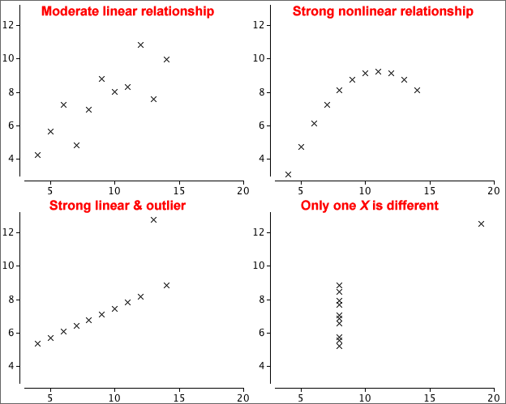
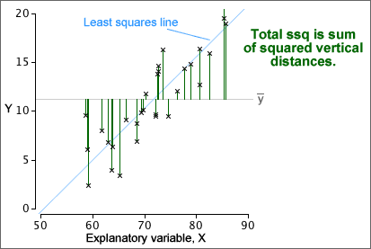

If you don't want to print now,
The data matrix
Many datasets contain several measurements from each individual (or plant, item or other unit). Each measurement type is called a variable.
A data set with more than one variable is called multivariate. One with two variables is called bivariate.
Scatterplots
A scatterplot shows each individual as a single cross against a vertical axis (for the variable, Y) and a horizontal axis (for the other variable, X).

By convention, the variable on the vertical axis is called Y and the variable on the horizontal axis is called X.
Scatterplots are needed to display relationships
The relationship between two variables cannot be determined from examination of the two variables in isolation. The two datasets shown in the scatterplots below have the same marginal distributions for X and Y, but the variables are related in very different ways.

Marginal distributions
Although they do not contain information about the relationship between the variables, a display of the marginal distributions can be usefully added to a scatterplot to enhance it, perhaps highlighting skewness in X and Y.

Time-ordering of univariate data
Some data sets are apparently univariate, but the measurements are made sequentially in time. A data set of this form is called a time series.
The time at which each measurement was made may be treated as an additional numerical variable, and the measurement can then be plotted against time. This type of scatterplot is often called a time series plot.

Strength of relationship
The most important information that a scatterplot shows is the strength of the relationship between the variables. The closer the points to a straight line or curve, the stronger the relationship.
If higher values of one variable tend to be associated with higher values of the other variable, the crosses on the scatterplot will be in a band with positive slope and the relationship is said to be positive. If high values of one variable tend to be associated with low values of the other variable, we say that there is a negative relationship.

The strength of the relationship between two variables is usually the most important information that we gain from a scatterplot but a scatterplot may display other features.
Outliers
Values that seem 'different' from the rest of the data are called outliers.
An outlier may be an extreme value of one or other variable, but an individual may be an outlier even though neither X nor Y is unusual on its own. One point is an outlier in each of the three data sets below.


The point is an outlier in the righthand data set because it lies well above the main group of points — its y-value is much higher than others with similar x-values.
Importance of outliers
Outliers are features of a data set that must be carefully checked. An outlier is often caused by a recording or transcription error, so...
First check that the values of the variables are correctly recorded.
Sometimes an outlier arises because an individual is fundamentally different from the others. Identifying what makes the individual different often gives considerable insight into the data.
The individuals should be further examined (perhaps collecting further information from them) to try to assess whether the outlier individual has distinct characteristics.
An outlier that is either extreme or that has other distinctive characteristics would often be deleted from the data set, but should be mentioned in a report about the data.
Clusters
Sometimes the cloud of crosses separates into two or more groups which are called clusters. As with outliers, clusters provide important information that should be further investigated.

The individuals should be examined (perhaps collecting further information from them) to assess whether the clusters correspond to individuals with distinct characteristics. For example, the clusters may correspond to males and females, or two different species of plant.
Interpreting outliers or clusters
We have described some information that may be read from a scatterplot. But how strong must the corrresponding patterns be before we should report them?
In both univariate and bivariate data sets, outliers or clusters must be distinct before we should conclude that they are real, in the absence of further external information confirming that the individuals are distinct.
Particularly in small data sets, outliers, clusters and other patterns may arise by chance, without being associated with any real features in the individuals.
Be careful not to overinterpret features in scatterplot unless they are well defined, especially if the sample size is small.
Causal relationships
In many bivariate data sets, the relationship between the two variables is not symmetric. From the nature of the variables and the way that the data were collected, it may be clear that one variable, X, can potentially influence the other, Y, but that the opposite is impossible.

In such data, the variable X is called the explanatory variable and Y is called the response.
Experiments
In an experiment, the person conducting the experiment controls the values of the explanatory variable. A well-designed experiment always ensures that the relationship between the explanatory variable and response is causal.
Observational studies
If the person collecting the data has no control over either of the variables, and simply records a pair of values from each individual, then the data are called observational. If one variable is an earlier measurement than the other, we may also be able to treat it as an explanatory variable and the later variable as the response.
Even if the relationship is not causal, we are sometimes interested in predicting the value of one variable from the other. The variable being predicted would then be treated as the response.
Units and strength of a relationship
A numerical summary of the strength of the relationship between two variables should not depend on the units in which we measure the two variables. The strength of the two relationships between the Metabolic rate (CO2 produced) and Weight of turkeys are the same in both of the scatterplots below.
We therefore start by defining units-free versions of the two variables and will summarise the strength of the relationship in terms of them.
Definition
The correlation coefficient is usually defined by the formula

It is however easier to understand if written in terms of standardised versions of X and Y,

The correlation coefficient is a kind of average of the products of the z-scores.
How does r relate to the shape of a scatterplot?
The following properties of r explain in general terms how its value is related to the strength of a relationship in any particular scatterplot.
 |
 |
 |
|
 |
 |
| −1 ≤ r ≤ +1 | |
How does r relate to the shape of a scatterplot?
The properties on the previous page describe the general behaviour of the correlation coefficient, but do not give enough resolution for you to anticipate the type of scatterplot that might have correlation coefficient 0.8 say, or 0.96.

Note that values of r between -0.5 and 0.5 correspond to very weak relationships.
Always look at a scatterplot first
Although the correlation coefficient is a good description of the strength of many relationships, it does not adequately describe others.
A scatterplot should always be examined to help assess whether there are features in the data that the correlation coefficient cannot describe.
The data sets below share the same value of r = 0.816 (and the same means and st devns for X and Y) but their scatterplots show that different conclusions should be drawn from them.

The notion of prediction
Notation and convention
If the variables can be classified as an explanatory variable and a response, we use the letter X to denote the explanatory variable and Y to denote the response.
Always draw the response variable, Y, on the vertical axis of a scatterplot and X on the horizontal axis.
Predicting the response
The correlation coefficient describes the strength of a relationship, but does not help you to predict Y from X.
A curve or straight line that is drawn close to the crosses on a scatterplot (by eye or by any other method) is called a regression line and can be used to 'read off' the y-value corresponding to any x.

Equation to describe a regression line
A regression line could be drawn 'by eye' through a scatterplot, but we restrict attention to simple mathematical functions
y = ƒ ( x )
since they are easier and more objective to use.
Linear model
Some relationships must be described by curves, but a straight line is an adequate description of many bivariate data sets.
y = b0 + b1 x
The constant b0 is the intercept of the line and describes the y-value when x is zero. The constant b1 is the line's slope; it describes the change in y when x increases by one.

The predicted response at any x-value is
| = b0 + b1 x |
Fitted values
To assess how well a particular linear model fits any one of our data points, (xi, yi), we might consider how well the model would predict the y-value of the point,
| = b0 + b1 xi |
These predictions are called fitted values.
Residuals
The difference between the i'th fitted values and its actual y-value is called its residual.
| ei = yi − |
The residuals describe the 'errors' that would have resulted from using the model to predict y from the x-values of our data points.

Note that the residuals are the vertical distances of the crosses to the line.
Aim of small residuals
The residuals from a linear model (vertical distances from the crosses to the line) indicate how closely the model's predictions match the actual responses in the data.

'Good' values for b0 and b1 can be objectively chosen to be the values that minimise the residual sum of squares. This is the method of least squares and the values of b0 and b1 are called least squares estimates.
The diagram below respresents the squared residuals as blue squares. The least squares estimates minimise the total blue area.

Nonlinear relationships
A simple linear model is only appropriate when the cloud of crosses in a scatterplot of the data is regularly spread around a straight line. If the crosses are scattered round a curve, the relationship is called nonlinear and other models must be used.
Outliers
Another problem arises if there are outliers — observations that do not conform to the pattern and variability exhibited by the rest of the data. In a linear model, the most important type of outlier is a data point that lies at a distance from the line that would fit through the rest of the data.
The individual corresponding to any outlier should be carefully examined. Recording or transcription errors may be the cause. Alternatively, it may be possible to determine some distinguishing characteristic of the individual that underlies the unusual response measurement.
If an outlier is extreme enough, or if a special cause for its unusual behaviour can be found from outside information, the individual can be classified as aberrant and deleted from the data set.
It is important to look at any data set graphically before fitting a linear model to check that no curvature or outliers is present.
Detecting problems with the model
If outliers or curvature are present in a data set, they are often visible in a scatterplot of the response against the explanatory variable. However these features are usually clearer if the residuals are plotted against X rather than the original response.

Different lines are used to predict Y and to predict X
The least squares line for predicting Y from X,
y = b0 + b1 x
minimises the sum of squared vertical distances between the points on a scatterplot and the line. On the other hand, if we are interested in predicting X from Y using a line,
x = c0 + c1 y
the residuals are the horizontal distances between the points and the line, and least squares minimises their sum of squares.

Different lines minimise the sum of squares of horizontal and vertical distances.
About the two least squares lines
The two least squares lines can be written in terms of standardised variables,
| Equation of least squares line to predict Y from X | |
|---|---|
| Equation of least squares line to predict X from Y |
where r is the correlation coefficient between X and Y. Since r is always less than 1, the least squares line for predicting Y from X is the more horizontal (closer to being parallel to the x-axis) of the two lines.

Total variation
| The total sum of squares reflects the total variability of the response. |
The overall variance of all response values is the total sum of squares divided by (n - 1).

Explained variation (signal)
| The explained sum of squares is the variation that is explained by the model. |
Residual variation (noise)
| The residual sum of squares is the unexplained variation. |
Note that the pooled estimate of the error variance, σ2, is the sum of squares within groups divided by (n - 2).

Relationship between sums of squares
The following relationship requires some algebra to prove but is important.

Coefficient of determination
A useful summary statistic is the proportion of the total variation that is explained, the coefficient of determination, R2,

A proportion (1 - R2) of the total variation remains unexplained by the model.
Although it is derived with quite a different aim,

Example

We are often interested in whether a categorical distribution is the same in two or more groups of individuals. The categorical data in each group can be expressed as a frequency table. Combining these frequency tables into a single rectangular array gives a contingency table.

Categorical variables and groups
The raw data may be a list of values from each of several groups (as above) or the groups may be specified by a categorical variable in a single data matrix.

A contingency table may arise from an experiment (where one variable is controlled by the experimentor) or a survey (where there is no control over the individuals).
Example (from experiment)
To test whether vitamin C reduces the risk of catching a cold, a 1961 French study involved 279 skiers over two periods of 5-7 days. Skiers in one group of 139 were given 1 gram ascorbic acid (vitamin C) per day whereas those in the other group were given a tablet that looked similar but had no active ingredient (called a placebo). None of the skiers knew which of the treatments they had received.
| Cold | No cold | |
|---|---|---|
| Ascorbic acid | 17 | 122 |
| Placebo | 31 | 109 |
Example (from survey)
A health survey was conducted in the UK in 2000. The contingency table below gives the main reason for not using contraception by the 410 women aged 16-49 who were in a sexual relationship, not using contraception and not sterilised.
| Age | |||
|---|---|---|---|
| 16-29 | 30-39 | 40-49 | |
| Partner sterilised | 6 | 81 | 127 |
| Wants to become pregnant | 12 | 28 | 11 |
| Pregnant now | 15 | 20 | 2 |
| Menopause | 0 | 2 | 11 |
| Possibly infertile | 6 | 18 | 19 |
| Doesn't like contraception | 3 | 7 | 6 |
| Other reason | 15 | 8 | 13 |
Proportions within groups
To compare the distributions of a categorical variable in different groups, it is best to examine the proportions within the groups — the cell frequencies divided by their group totals.
In a study of racial differences in blood types, 145,057 blood specimens from the Blood Bank of Hawaii were tested.
| Blood type | |||||
|---|---|---|---|---|---|
| Ethnic group | O | A | B | AB | Total |
| Hawaiian | 01,903 | 02,490 | 00,178 | 0,099 | 4,670 |
| Hawaiian-white | 04,469 | 04,671 | 00,606 | 0,236 | 9,982 |
| Hawaiian-chinese | 02,206 | 02,368 | 00,568 | 0,243 | 5,385 |
| White | 53,759 | 50,008 | 16,252 | 5,001 | 125,020 |
From the table of within-group percentages below, it is clearer that blood groups B and AB are rarer for Hawaiians and Hawaiian-whites than for the other ethnic groups.
| Blood type | |||||
|---|---|---|---|---|---|
| Ethnic group | O | A | B | AB | Total |
| Hawaiian | 40.7 | 53.3 | 03.8 | 02.1 | 100.0 |
| Hawaiian-white | 44.8 | 46.8 | 06.1 | 02.4 | 100.0 |
| Hawaiian-chinese | 41.0 | 44.0 | 10.5 | 04.5 | 100.0 |
| White | 43.0 | 40.0 | 13.0 | 04.0 | 100.0 |
Bar charts of proportions
Bar charts can be used to graphically compare groups and it is again best to use proportions within groups rather than raw frequencies, especially if the groups are of different sizes.

Clustering the bars
Each cluster of bars above is a valid bar chart for one group. Alternatively, the same bars can be clustered by the variable of interest:

This makes it easier to make comparisons between the groups.
In some bivariate categorical data sets, one variable can be treated as a response whose value depends on the other explanatory variable. The explanatory variable can then be used to split the individuals into groups.
Bivariate data without an explanatory variable
In other bivariate data, the relationship between the variables is more symmetrical but we still want to discover whether particular values of one variable are associated with values of the other. A contingency table again summarises the data.
| Variable X | ||||
|---|---|---|---|---|
| Variable Y | X1 | X2 | X3 | |
| Y1 | 105 | 07 | 11 | |
| Y2 | 058 | 05 | 13 | |
| Y3 | 084 | 37 | 42 | |
| Y4 | 057 | 16 | 17 | |
If the variables cannot be classified into a response and explanatory variable, it is often still useful to treat one of the variables as splitting the individuals into groups. Either variable can be used for this purpose.
Marginal counts
Although our main interest is usually on the relationship between two categorical variables, it can also be of interest to examine the overall distribution of each variable separately. These are called the marginal distributions of the two variables and are determined by the row and column totals of the contingency table.
| Variable X | ||||||
|---|---|---|---|---|---|---|
| Variable Y | X1 | X2 | X3 | X4 | Total | |
| Y1 | 002 | 003 | 057 | 06 | 68 | |
| Y2 | 052 | 170 | 163 | 17 | 402 | |
| Y3 | 156 | 125 | 061 | 06 | 348 | |
| Y4 | 220 | 083 | 039 | 04 | 346 | |
| Total | 430 | 381 | 320 | 33 | ||
The row and column totals correspond to the heights of the stacks in stacked bar charts. For example, the above row totals are the heights of the stacks in the following diagram.

| and |
Spliting into groups
If the values of X are used to split the individuals into groups, the conditional distributions of Y given X are the distributions within each of these groups. They are found by dividing the cell counts by the totals for each such group. The columns of the table below show the conditional distributions for a contingency table, expressed as percentages.
| Variable X | |||||
|---|---|---|---|---|---|
| Variable Y | X1 | X2 | X3 | X4 | |
| Y1 | 000.5 | 000.8 | 017.8 | 018.2 | |
| Y2 | 012.1 | 044.6 | 050.9 | 051.5 | |
| Y3 | 036.3 | 032.8 | 019.1 | 018.2 | |
| Y4 | 051.2 | 021.8 | 012.2 | 012.1 | |
| Total | 100.0 | 100.0 | 100.0 | 100.0 | |
The conditional distributions of X given Y are similarly found by using Y to create the groups of individuals. They are found by dividing the cell counts by the totals in the other margin of the original contingency table.
| Variable X | ||||||
|---|---|---|---|---|---|---|
| Variable Y | X1 | X2 | X3 | X4 | Total | |
| Y1 | 02.9 | 04.4 | 83.8 | 8.8 | 100.0 | |
| Y2 | 12.9 | 42.3 | 40.5 | 4.2 | 100.0 | |
| Y3 | 44.8 | 35.9 | 17.5 | 1.7 | 100.0 | |
| Y4 | 63.6 | 24.0 | 11.3 | 1.2 | 100.0 | |
Both tables of conditional proportions (or percentages) are often informative.
Conditional and marginal distributions
The distinction is between the marginal distribution for a variable and its conditional distributions is illustrated for the following contingency table that describes bruising of 96 apples in a packing plant.
| OK | Bruised | |
|---|---|---|
| Granny Smith | 40 | 8 |
| Fuji | 24 | 24 |
The diagram below shows the apples, arranged in rows by variety.

Observe that:
The apples can be rearranged as follows:

Now observe that: